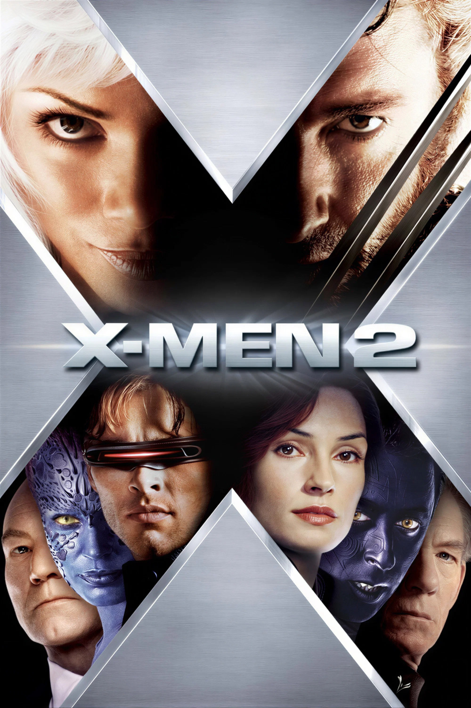

Мировая премьера: 2 мая 2003
Слоган: Сплотиться сегодня, чтобы наступило завтра.
Сюжет: Люди Икс – это мутанты, рождённые в результате уникальной генетической мутации, наделившей их с детства необыкновенными сверхспособностями. Им не доверяют и их боятся. После нападения сверхъестественного существа на президента прямо в Белом доме секретной правительственной организации поручено стереть всех мутантов с лица земли. Чтобы справиться с угрозой полного исчезновения и предотвратить войну людей против мутантов, Людям Икс необходимо объединиться. Но когда объединяются мутанты двух враждующих сторон, даже для общего дела, добра от этого ждать не следует...
Режиссёр: Брайан Сингер
В основе: Комиксы о Людях Икс (выходят с 1963, США, авторы – Стэн Ли и Джек Кирби)
Серия: Люди Икс
В ролях: |
Хью Джекман | Логан / Росомаха |
| Брайан Кокс | Полковник Уильям Страйкер | |
| Патрик Стюарт | Профессор Чарльз Завьер / Профессор Икс | |
| Хэлли Берри | Ороро Манро / Шторм | |
| Фамке Янссен | Доктор Джин Грей | |
| Иэн МакКеллен | Эрик Леншерр / Магнито | |
| Джеймс Марсден | Скотт Саммерс / Циклоп | |
| Алан Камминг | Курт Вагнер / Попрыгун | |
| Шон Эшмор | Бобби Дрейк / Айсберг | |
| Анна Пакуин | Мари / Роуг | |
| Ребекка Ромейн-Стамос | Рейвен Даркхолм / Мистик | |
| Аарон Стэнфорд | Джон Аллердайс / Пиро | |
| Коттер Смит | Президент МакКенна | |
| Брюс Дэвисон | Сенатор Роберт Келли | |
| Кили Пёрвис | Маленькая девочка | |
| Келли Ху | Юрико Ояма / Леди Смертельный Удар | |
| Дэниэл Кадмор | Пётр Распутин / Колосс |
Бюджет: $ 210 млн.
Кассовые сборы в США: $ 215 млн.
Кассовые сборы в мире: $ 408 млн.
Продолжительность: 2 ч. 5 мин.
Рейтинг: 7.4